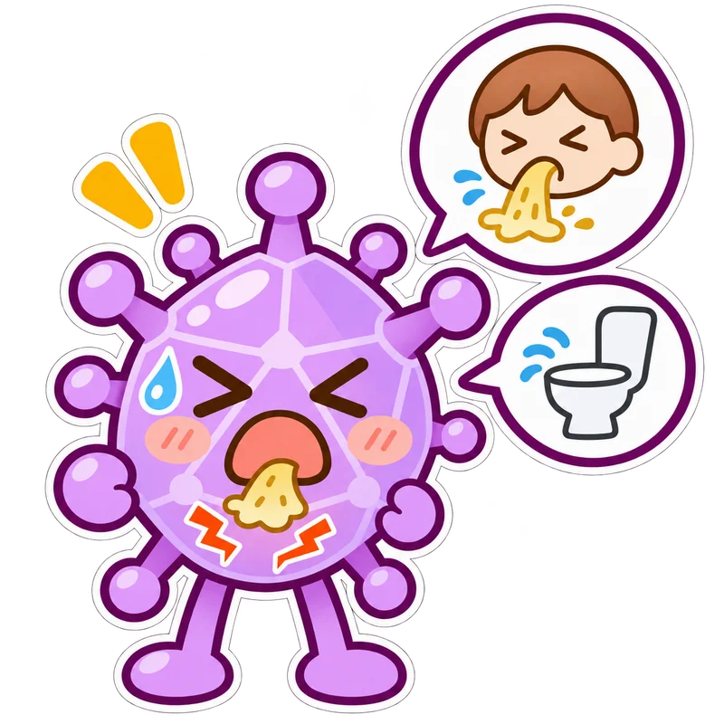

ウイルス性胃腸炎（ノロ・ロタなど）
ノロウイルスやロタウイルスなどで起こり、吐いたり、下痢や腹痛、発熱が出たりします。
水分がとれない、尿が減った、ぐったりしているときは早めに医療機関へ相談してください。

どんな病原体？
ノロウイルス・ロタウイルスなどが原因。嘔吐、下痢、腹痛などが現れる。原因となるウイルスは複数ある。
どうやって広がる？ 便や吐物に含まれるウイルスが手や食品などを介して口に入ることで広がる。
学校・園はいつから行ける？
- 学校・幼稚園の出席停止
- 一律の日数はありません。学校の案内を確認。
- 保育所の登園の目安
- 嘔吐や下痢がおさまり、普段の食事がとれる。